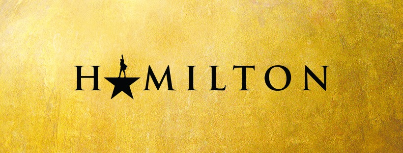
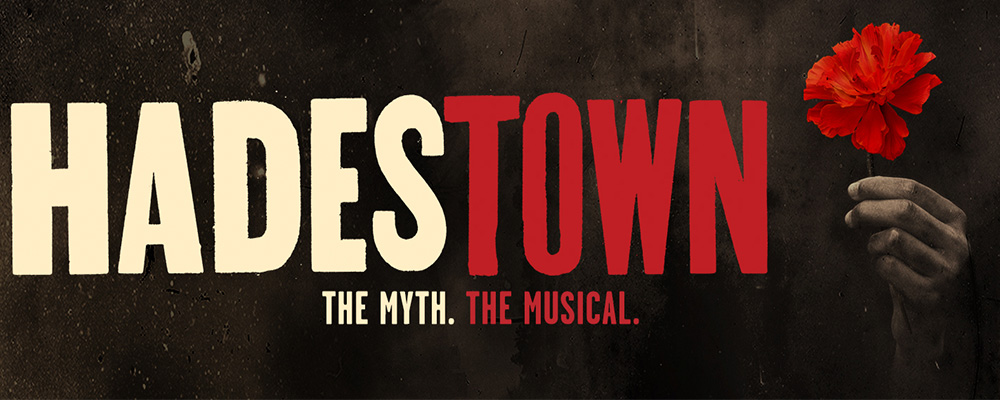
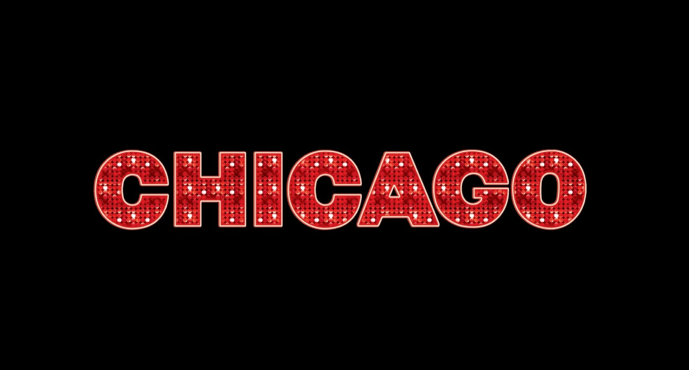

Hamilton: An American Musical é um musical sobre a vida do pai-fundador americano Alexander Hamilton, de música, letra e livro criados por Lin-Manuel Miranda. O espetáculo, inspirado pela biografia de 2004 "Alexander Hamilton" do historiador Ron Chernow, alcançou aclamação da crítica e sucesso de bilheteria.
Six é um musical britânico com livro, música e letra de Toby Marlow e Lucy Moss. O musical é uma releitura moderna da vida das seis esposas de Henry VIII, apresentadas como um concerto pop, pois as esposas se revezam cantando e contando sua história para ver quem sofreu mais devido a Henry e, portanto, deve se tornar o grupo. vocalista principal.
Hadestown: The Myth, The Musical é uma adaptação para os palcos de 2016 do álbum conceitual homônimo folk opera de Anaïs Mitchell. Estreou na off-Broadway em 6 de maio de 2016 no New York Theatre Workshop, com apresentações até 31 de julho. O espetáculo foi desenvolvido para os palcos e dirigido por Rachel Chavkin.
Chicago é um musical composto por John Kander, com letras de Fred Ebb e libretto de Ebb e Bob Fosse. A história é uma sátira à corrupção na administração da justiça criminal e ao conceito de "celebridade criminal."
O musical Brilha la Luna, que se inspira nas músicas do grupo Rouge, é uma produção da Lab Cultural, tem texto de Juliano Marceano, direção original de Pedro Rothe (Elis – A Musical), direção musical e arranjos de Tony Lucchesi (Bibi – Uma Vida em Musical) e coreografias de Victor Maia (Meu Destino é Ser Star). A ideia, segundo os idealizadores, nasceu antes mesmo da volta do grupo em 2013.